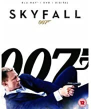

The return of renowned filmmaker Quentin Tarantino after an absence of 6 years. Uma Thurman stars as The Bride, one-fifth of a team of assassins called DiVAS.
When she decides to get married and leave the outfit her boss, Bill (David Carradine), is not a happy man and gets her former colleagues to show up at the wedding; leaving behind a blood bath and The Bride shot in the head. Four years later, The Bride sets out on a journey of revenge which is ultimately to kill her former boss, Bill. The film was due to be three hours long but was split into two films (hence the name) and Volume 2 concludes the story.
Die Hard
Star Rating
In the 1980s, action movies tended to be the preserve of muscle men, chain-gunning their way to body-counts of infinitude. At the decade's close, a TV comedy star and a sci-fi/horror director made an action movie about a regular schmoe in the wrong place at the wrong time... and inadvertently made the greatest action movie of all time.
Avengers: Endgame
Star Rating
Adrift in space with no food or water, Tony Stark sends a message to Pepper Potts as his oxygen supply starts to dwindle. Meanwhile, the remaining Avengers -- Thor, Black Widow, Captain America and Bruce Banner -- must figure out a way to bring back their vanquished allies for an epic showdown with Thanos -- the evil demigod who decimated the planet and the universe.
Police Story
Star Rating
A kung-fu policeman (Jackie Chan) must protect a female witness (Brigitte Lin) from a Hong Kong drug lord for whom she used to work.
Raya and the Last Dragon
Star Rating
Long ago, in the fantasy world of Kumandra, humans and dragons lived together in harmony. But when sinister monsters known as the Druun threatened the land, the dragons sacrificed themselves to save humanity. Now, 500 years later, those same monsters have returned and it's up to a lone warrior, Raya, to track down the last dragon in order to finally stop the Druun for good. However, along her journey, she'll learn that it'll take more than dragon magic to save the world--it's going to take trust as well.
Saving Private Ryan
Star Rating
Captain John Miller (Tom Hanks) takes his men behind enemy lines to find Private James Ryan, whose three brothers have been killed in combat. Surrounded by the brutal realties of war, while searching for Ryan, each man embarks upon a personal journey and discovers their own strength to triumph over an uncertain future with honor, decency and courage.
Skyfall

Star Rating
When James Bond's (Daniel Craig) latest assignment goes terribly wrong, it leads to a calamitous turn of events: Undercover agents around the world are exposed, and MI6 is attacked, forcing M (Judi Dench) to relocate the agency. With MI6 now compromised inside and out, M turns to the one man she can trust: Bond. Aided only by a field agent (Naomie Harris), Bond takes to the shadows and follows a trail to Silva (Javier Bardem), a man from M's past who wants to settle an old score.
The Matrix
Star Rating
Neo (Keanu Reeves) believes that Morpheus (Laurence Fishburne), an elusive figure considered to be the most dangerous man alive, can answer his question -- What is the Matrix? Neo is contacted by Trinity (Carrie-Anne Moss), a beautiful stranger who leads him into an underworld where he meets Morpheus. They fight a brutal battle for their lives against a cadre of viciously intelligent secret agents. It is a truth that could cost Neo something more precious than his life.
Leon
Star Rating
After her father, step-mother, step-sister and little brother are killed by her father's employers, the 12-year-old daughter of an abject drug dealer manages to take refuge in the apartment of a professional hitman who at her request teaches her the methods of his job so she can take her revenge on the corrupt DEA agent who ruined her life by killing her beloved brother.
The Lord of the Rings: The Return of the King
Star Rating
The culmination of nearly 10 years' work and conclusion to Peter Jackson's epic trilogy based on the timeless J.R.R. Tolkien classic, "The Lord of the Rings: The Return of the King" presents the final confrontation between the forces of good and evil fighting for control of the future of Middle-earth. Hobbits Frodo and Sam reach Mordor in their quest to destroy the `one ring', while Aragorn leads the forces of good against Sauron's evil army at the stone city of Minas Tirith.